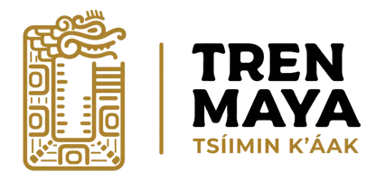
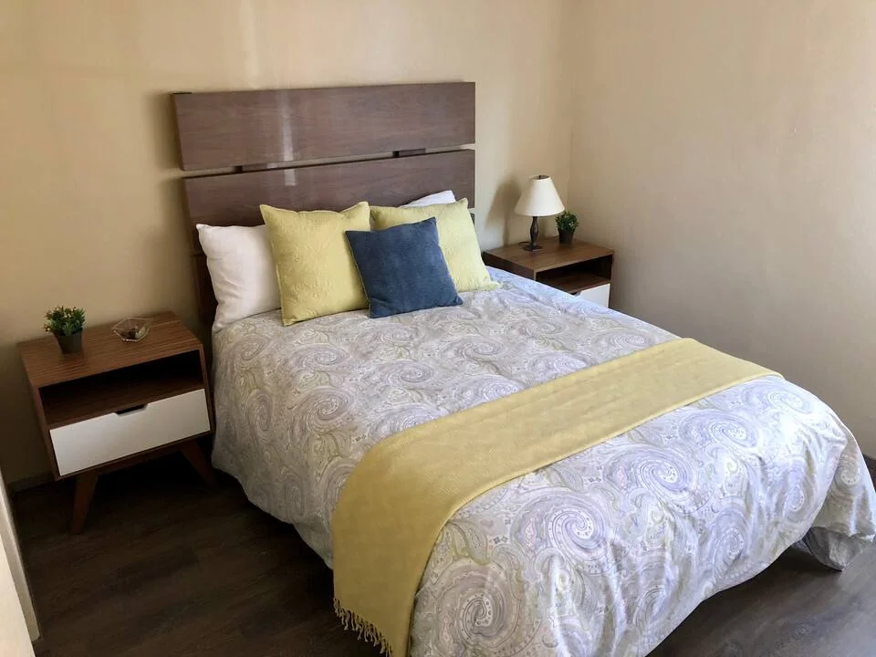
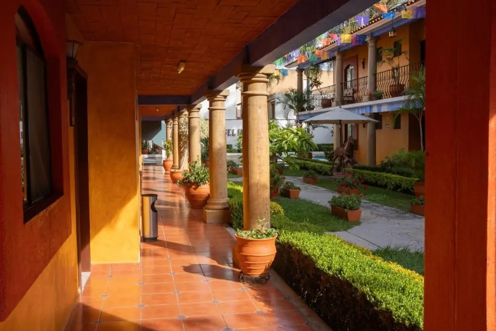
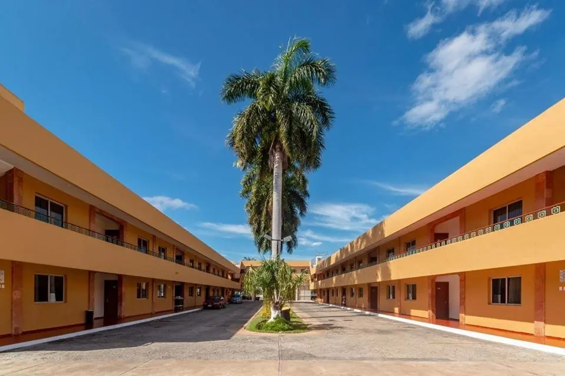
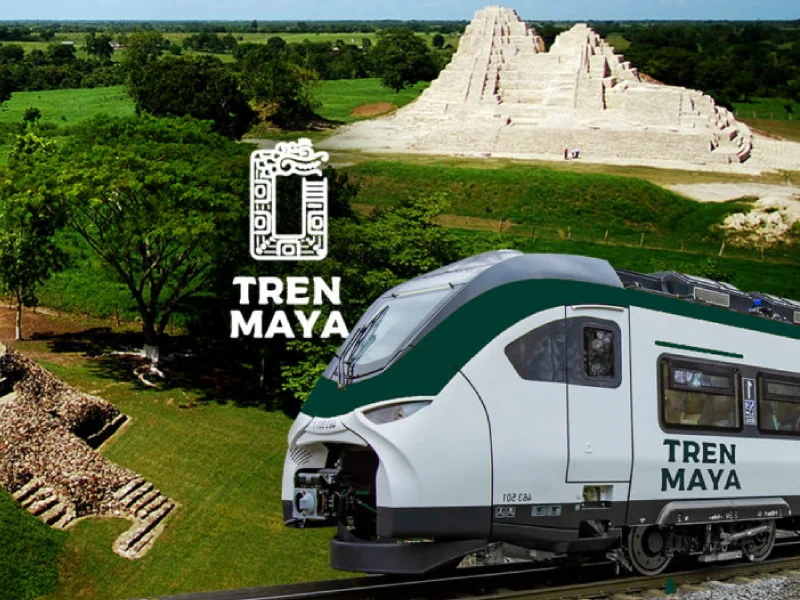
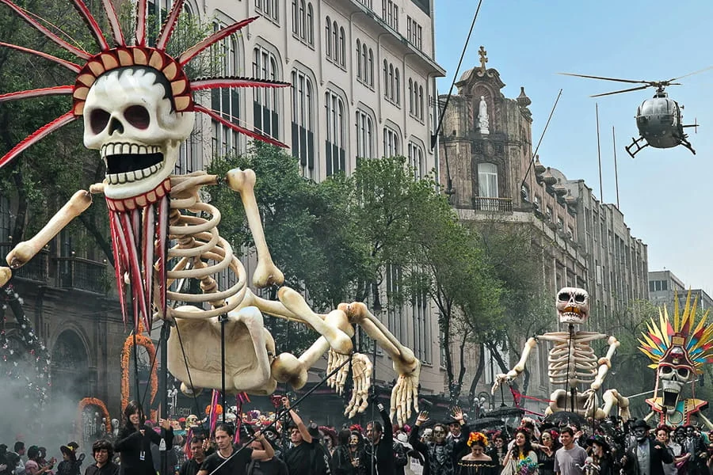
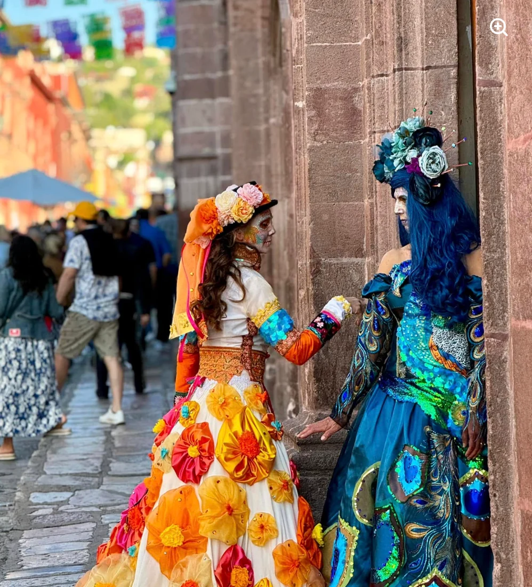
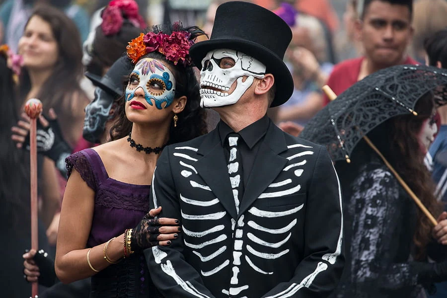
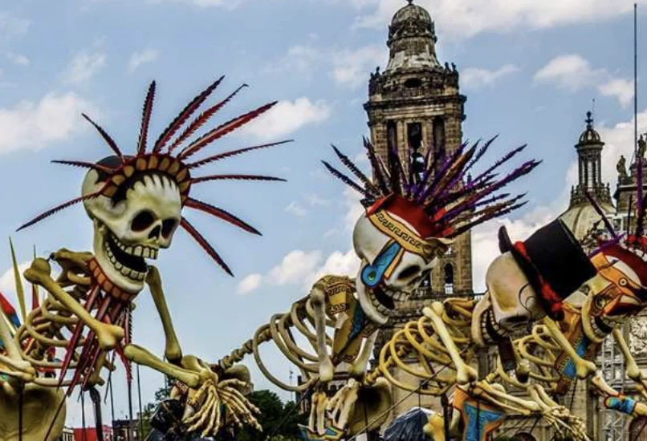
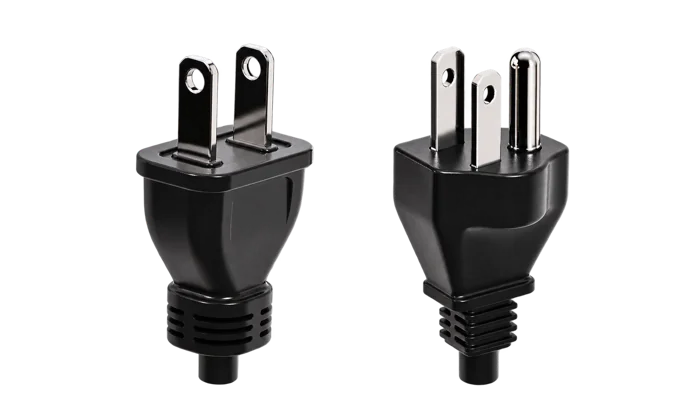

在一座城市，走過不同時代
墨西哥城的歷史中心建立在阿茲特克都城特諾奇蒂特蘭的遺址上。古代神殿、殖民時期建築與今日街景並存。
古文明發源地｜馬雅（Maya）與阿茲特克（Aztec）文明留下豐富遺跡，奇琴伊察是其中最著名的馬雅古城之一。
文化融合｜原住民與西班牙文化交融，形成鮮明的藝術、瑪利亞奇（Mariachi）音樂與亡靈節等節慶傳統。
亡靈節 / DÍA DE MUERTOS · 10.24 — 11.03
Mexico City · Oaxaca · Mérida · Yucatán · Cancún
從墨西哥城開始，沿著亡靈節的文化脈絡一路向南，再飛往猶加敦半島。九個人，一條路線，從城市、墓園一路走到加勒比海。
Jorge、Hui-Chen、Risa、Michael、Zola、Vivian、Harry、Jill、Rick
Jorge ↔ Hui-Chen｜伴侶
Jorge（虎航機長）、Michael、Zola、Vivian、Harry、Rick｜六位同事
Risa ↔ Jill｜大學隔壁班同學


墨西哥城的歷史中心建立在阿茲特克都城特諾奇蒂特蘭的遺址上。古代神殿、殖民時期建築與今日街景並存。
古文明發源地｜馬雅（Maya）與阿茲特克（Aztec）文明留下豐富遺跡，奇琴伊察是其中最著名的馬雅古城之一。
文化融合｜原住民與西班牙文化交融，形成鮮明的藝術、瑪利亞奇（Mariachi）音樂與亡靈節等節慶傳統。
亡靈節是墨西哥原住民社群紀念逝去親友、迎接他們暫返人間的傳統。
祭壇與供品｜花瓣、蠟燭、照片與親人生前喜愛的食物，都是表達思念的方式。
走進在地文化｜各地習俗不同，參與祭儀時降低音量，拍攝前先詢問，不碰供品、不打擾家屬。
墨西哥傳統料理以玉米、豆類與辣椒為基礎，2010 年列入 UNESCO 人類非物質文化遺產代表名錄。
玉米為本｜從玉米餅（Tortilla）到各式餅皮，搭配紅、綠莎莎醬，呈現多變風味。
經典必嚐｜塔可（Tacos）包肉與配料；莫勒醬（Mole Poblano）融合乾辣椒、香料與巧克力；塔馬利（Tamales）則以葉片包裹玉米麵團蒸熟。
瓦哈卡與梅里達行程已補上；墨西哥城行程待更新。Oaxaca and Mérida details are updated; Mexico City updates are pending.
行程細節可在確認景點後再展開。More details will be added once sightseeing plans are confirmed.
行程細節可在確認景點後再展開。More details will be added once sightseeing plans are confirmed.
行程細節可在確認景點後再展開。More details will be added once sightseeing plans are confirmed.
行程細節可在確認景點後再展開。More details will be added once sightseeing plans are confirmed.
06:45 抵達瓦哈卡巴士總站，Ulises 接往住宿。Arrive at Central de Autobuses Oaxaca at 06:45; Ulises picks us up and takes us to our accommodation.
圖雷小鎮早餐 → 石化瀑布健行，可自行選擇游泳。Breakfast in El Tule → hiking at Hierve el Agua, with optional swimming.
米特拉遺址與小鎮手工藝、織品；午餐享用自助餐。Visit Mitla ruins and browse local crafts and textiles; buffet lunch in Mitla.
團費可刷卡；餐食與門票另計。Card payment accepted for the tour; meals and admission fees are extra.
參觀阿爾班山遺址，接著欣賞阿雷布里赫奇幻木雕。Visit Monte Albán ruins, followed by traditional alebrije woodcarvings.
團費可刷卡；餐食與門票另計。Card payment accepted for the tour; meals and admission fees are extra.
單點早餐約 MXN 300–400／人；參觀傳統熱巧克力攪拌棒工坊。À la carte breakfast: about MXN 300–400 per person; visit a traditional molinillo workshop (wooden hot-chocolate whisks).
格拉陶，貝尼托・華雷斯故鄉：門票 MXN 50／人。Guelatao, birthplace of Benito Juárez: admission MXN 50 per person.
玻璃景觀台：門票 MXN 120／人。Glass viewpoint: admission MXN 120 per person.
可選：卡普拉爾潘・德・門德斯，門票 MXN 20／人；草藥淨化、按摩或傳統蒸氣浴。Optional: Capulálpam de Méndez (admission MXN 20 per person), herbal cleansing, massage or a traditional temazcal steam bath.
團費可刷卡；餐食、門票與選購體驗另計。Card payment accepted for the tour; meals, admission fees and optional experiences are extra.
專車由飯店送往瓦哈卡機場，MXN 1,200／團。Private hotel-to-Oaxaca-airport transfer: MXN 1,200 per group.
抵達梅里達後，機場接送至飯店並交付租車。On arrival in Mérida, transfer from the airport to the hotel and receive the rental vehicle.
入住後可開車前往普羅格雷索午餐；下午或晚間返回梅里達歷史中心散步。After check-in, optionally drive to Progreso for lunch; return for an afternoon or evening walk in Mérida’s historic centre.
先參觀奇琴伊察。Visit Chichén Itzá first.
可選：前往拉斯科洛拉達斯粉紅湖，再返回梅里達。Optional: visit the pink lagoons of Las Coloradas before returning to Mérida.
穆庫伊切天然井 → 烏斯馬爾遺址 → 巧克力博物館。Cenote Mucuyché → Uxmal ruins → Chocolate Museum.
安排品嚐當地猶加敦傳統料理。Enjoy traditional Yucatecan cuisine.
行程細節可在確認景點後再展開。More details will be added once sightseeing plans are confirmed.
行程細節可在確認景點後再展開。More details will be added once sightseeing plans are confirmed.
每個人可以選不同班機，同航空公司以同色標示。
ZED Tickets｜組員員工票，班機依各人安排。
Jill、Hui-Chen 慧珍｜自購機票。
10/22 出發｜Zola、Jorge、Hui-Chen 慧珍
| 航班 | 當地時間 | 飛行時間 |
|---|---|---|
| JX012 | 00:05 → 20:30 −1 | 11h 25m |
| UA872 | 09:50 → 06:35 | 11h 45m |
| BR008 | 10:15 → 06:35 | 11h 20m |
| UA852 | 14:30 → 11:15 | 11h 45m |
| BR018 | 19:40 → 16:00 | 11h 20m |
| CI004 | 23:30 → 19:55 | 11h 25m |
| BR028 | 23:40 → 20:00 | 11h 20m |
| 航班 | 當地時間 | 飛行時間 |
|---|---|---|
| UA1271 | 10:50 → 16:15 | 4h 25m |
| UA817 | 15:12 → 20:35 | 4h 23m |
| UA412 | 22:41 → 04:00 +1 | 4h 19m |
10/23 出發｜Harry 博仁、Michael 彥銘
| 航班 | 當地時間 | 飛行時間 |
|---|---|---|
| JX012 | 00:05 → 20:30 −1 | 11h 25m |
| UA872 | 09:50 → 06:35 | 11h 45m |
| BR008 | 10:15 → 06:35 | 11h 20m |
| UA852 | 14:30 → 11:15 | 11h 45m |
| BR018 | 19:40 → 16:00 | 11h 20m |
| CI004 | 23:30 → 19:55 | 11h 25m |
| BR028 | 23:40 → 20:00 | 11h 20m |
| 航班 | 當地時間 | 飛行時間 |
|---|---|---|
| UA1271 | 10:50 → 16:15 | 4h 25m |
| UA817 | 15:12 → 20:35 | 4h 23m |
| UA412 | 22:41 → 04:00 +1 | 4h 19m |
10/24 出發｜Risa 阿莎、Jill 小薇、Vivian 曉淋
| 航班 | 當地時間 | 飛行時間 |
|---|---|---|
| JX012 | 00:05 → 20:30 −1 | 11h 25m |
| UA872 | 09:50 → 06:35 | 11h 45m |
| BR008 | 10:15 → 06:35 | 11h 20m |
| UA852 | 14:30 → 11:15 | 11h 45m |
| BR018 | 19:40 → 16:00 | 11h 20m |
| CI004 | 23:30 → 19:55 | 11h 25m |
| BR028 | 23:40 → 20:00 | 11h 20m |
| 航班 | 當地時間 | 飛行時間 |
|---|---|---|
| UA1271 | 10:50 → 16:15 | 4h 25m |
| UA817 | 13:12 → 18:35 | 4h 23m |
| UA412 | 22:47 → 04:05 +1 | 4h 18m |
各日期顯示當天候選時刻。跨日航班需依實際抵達日選銜接班次；Rick 去程安排待補。
| 航班 | 當地時間 | 飛行時間 |
|---|---|---|
| UA1948 | 13:45 → 16:52 | 6h 7m |
| UA1118 | 18:05 → 21:08 | 6h 3m |
| 航班 | 當地時間 | 飛行時間 |
|---|---|---|
| JX011 | 23:10 → 05:15 +2 | 14h 5m |
| UA853 | 23:10 → 05:45 +2 | 14h 35m |
| BR027 | 23:30 → 05:40 +2 | 14h 10m |
| CI003 | 23:40 → 05:45 +2 | 14h 5m |
| BR017 | 23:50 → 06:00 +2 | 14h 10m |
| 航班 | 當地時間 | 飛行時間 |
|---|---|---|
| UA1275 | 15:07 → 17:34 | 5h 27m |
| UA1277 | 17:40 → 20:02 | 5h 22m |
| 航班 | 當地時間 | 飛行時間 |
|---|---|---|
| BR011 | 22:35 → 05:15 +2 | 14h 40m |
| CI007 | 22:40 → 05:20 +2 | 14h 40m |
| JX001 | 22:50 → 05:30 +2 | 14h 40m |
| BR015 | 23:00 → 05:40 +2 | 14h 40m |
−1＝前一天抵達；+1＝隔天；+2＝兩天後（11/5）。時間依提供的航班表整理，皆為候選航班；銜接日期與實際搭乘班次待確認。國際機票不列入旅費。
以下時間皆為當地時間 · 目前訂單為 7 人
ADO · LUJO／Ejecutiva del Sur → Oaxaca
行李額度 25 kg · 抵達時間未列Volaris · Y4 7471
個人物品 1 件＋手提 1 件＋托運 25 kg；線上報到：起飛前 3 天。
Tren Maya Conecta · 已付款
MXN 30／人 · 7 人共 MXN 210 · 接駁班次時間待補* 按兩站當地時間換算：坎昆比梅里達快 1 小時。若車票使用統一時區，搭乘時長需再核對。

整套房源／3 bedrooms／4 beds／2 bathrooms。7 人入住。
VIEW LISTING ↗
3 晚／4 間標準房／7 人；每房 2 張雙人床。
入住 10/28 15:00 · 退房 10/31 12:00 前。
已付 MXN 22,868／NT$41,367，手續費另計。
10/31 搭乘 10:37 航班，需提早退房。

3 晚／4 間基本雙人房／7 人。
入住 10/31 15:00–19:00 · 退房 11/3 12:00 前。
已付 MXN 11,472／NT$20,753，手續費另計。
抵達前至少 24 小時聯絡住宿安排入住。
11 月 3 日，從 Mérida Teya 前往 Cancún Aeropuerto。7 人同行，抵達後轉乘已付款的機場接駁。

托運箱 1 件：23 kg／66 × 42 × 26 cm
手提箱 1 件：10 kg／55 × 40 × 25 cm
另可帶個人物品 1 件。
一般票提前 60 分鐘，長途票提前 90 分鐘。
07:00 班次先以 05:30 到站安排。
抵达坎昆車站後，轉乘 Conecta 至機場。
用花、食物、燭光與音樂，紀念生命與想念的人。
橘底＝瓦哈卡住宿夜晚（10/28–10/30），10/31 退房後飛往梅里達。
* 瓦哈卡活動為待確認的體驗方向，正式日期與地點待公告。
這是紀念生命、迎接親人靈魂回家的日子。




目前只放已知金額，不把未知費用亂估進總額。
7 人分攤 · 每人約 NT$19,723
包含刷卡手續費 NT$1,406。
目前各項由 Jorge 代付；國際機票不計入。
依提供帳表台幣入帳金額整理，未重新換匯。
ADO 票面合計 MXN 8,366，另加 MXN 119（每票 17）；不同票價按 7 人平分。此總額僅涵蓋目前已知支出。
墨西哥：A／B 型插座，127V／60Hz。
台灣常見 A／B 型插頭不需要轉接頭。
手機、筆電、相機充電器若標示 100–240V，可直接使用；僅標示 110V 的電器，先確認是否支援 127V。

1 MXN ≈ NT$1.76
100 MXN ≈ NT$176；500 MXN ≈ NT$880。
刷卡選 MXN，備小面額現金。
2026/09/30 參考中間價，另計價差與手續費。
有效期涵蓋 10/24–11/3，確認手機相容、合作網路及熱點功能。
美國轉機需確認方案涵蓋美國。先下載離線地圖與票券，抵達後依方案啟用。
結伴行動、約好集合點與回程接送。
帶外套、手電筒、行動電源；包包拉好，手機與現金分開收。
墓園拍照先詢問，不碰供品、不擋動線。
主力：穿習慣、防滑的運動鞋或步行鞋。
天然井：水鞋或固定帶涼鞋。
夜間穿包覆腳趾的鞋，多帶替換襪。
護照、保險與票券備份；藥品、充電線、行動電源、防曬、帽子、雨具、防蚊用品。
短袖＋薄長袖＋長褲＋輕外套。
各段交通的行李規則分開確認。